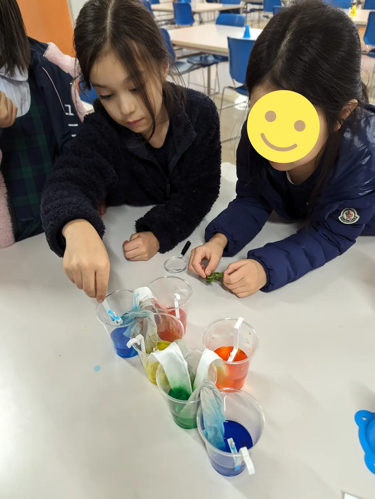

英語で学ぶSTEM放課後プログラム。
東京のすべてのご家庭に開かれた、Greentopiaの代表的なSTEM放課後プログラム。

対象
Greentopia Labsは、6〜14歳を対象とした、英語で学ぶGreentopiaの代表的なSTEM放課後プログラムです。提携校に通っているかどうかにかかわらず、手を動かして学ぶのが好きな好奇心旺盛な子どもたちのためにつくられています。元麻布のJ's International School内にある専用スペースで開催するため、東京のどの学校に通うご家庭でも参加できます。
活動内容
各回では、水耕栽培、科学実験、サステナビリティのテーマを組み合わせて学びます。水耕栽培で作物を植えて管理し、pHの測定、光の計測、栽培方法の比較などの実験に取り組みながら、食べ物はどこから来るのか、なぜそれが大切なのかといった大きな問いについても考えます。活動は毎週変わり、学期を通して積み重なっていくので、リピーターは回を重ねるごとに学びが深まります。
プログラムの流れ
Greentopia Labsの1学期は通常10〜12週間です。前半はシステムの準備と植え付け、中盤は実験とデータ収集、後半はサステナビリティのテーマやデザインチャレンジに取り組みます。学期の最後は収穫イベントと生徒による発表で締めくくります。
日時と場所
平日の午後15:00〜18:00、J's International School（東京・元麻布）にて。空き状況に応じて、週1日、2日、それ以上の参加も可能です。
料金
Greentopia Labsの料金は、2時間¥4,500、または3時間¥6,000です。複数回や学期単位でお申し込みのご家庭には割引があります。教材、機材、指導料はすべて含まれており、追加料金はかかりません。
保護者の方からのよくある質問
軽いおやつをご用意しています。自分たちで育てた葉物野菜、ハーブ、エディブルフラワーを味見することもよくあります。
はい。学期単位でお申し込みいただく前に、1回の体験参加でプログラムを体験していただけます。お気軽にお問い合わせください。
ほとんどの場合、可能です。はじめての生徒も参加しやすく、リピーターもステップアップできるように各回を設計しています。
送迎は保護者の方にJ's International Schoolでお願いしています。到着からお迎えまで、スタッフが見守ります。